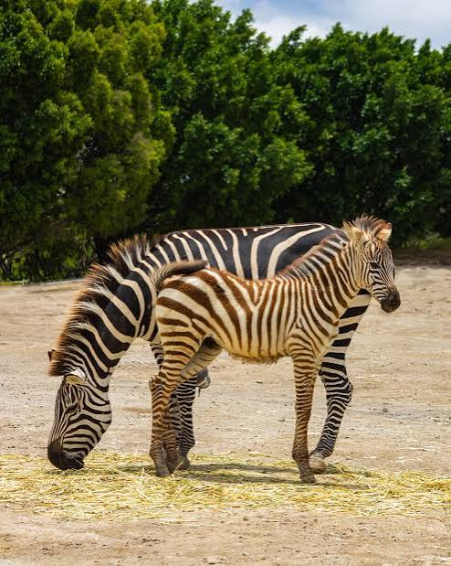

La cebra es uno de los mamíferos más emblemáticos de la sabana africana y un protagonista habitual en los safaris. Características principales • Pelaje único: Son de piel negra con rayas blancas; cada patrón es irrepetible (como una huella dactilar). • Función de las rayas: Ayudan a confundir a los depredadores al correr en grupo, regulan la temperatura corporal y repelen insectos como moscas y tábanos. • Alimentación: Son herbívoras y pasan la mayor parte del día pastando hierba, arbustos y ramas. Suelen ser las primeras en abrir camino en pastizales altos para que otros animales aprovechen el terreno. • Velocidad y sentidos: Tienen excelente vista y oído, y pueden galopar hasta a 65 km/h para huir de leones o hienas. • Estructura social: Viven en manadas o grupos familiares (harén) liderados por un macho dominante. A menudo viajan junto a los ñus durante la gran migración.